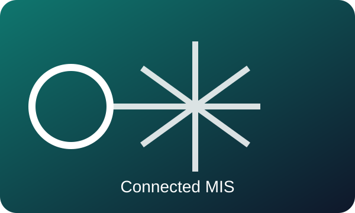
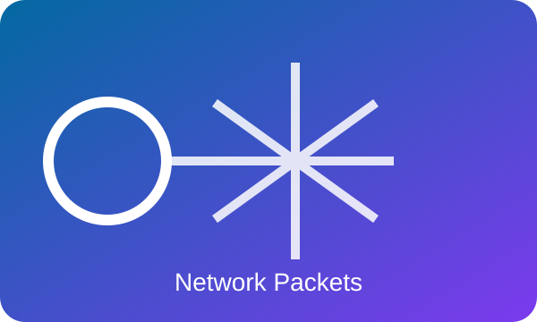

MIS & AI EthicsWebsite OverviewMickey MouseOctober 7, 2026  Management information systems connect people, processes, and technology so an organization can make better decisions. Artificial intelligence can find patterns and help people compare options. Cybersecurity protects the data and services that those decisions depend on. This website explains responsible AI use, common security threats, and the role of MIS. It connects classroom ideas to business choices. It also shows why people must verify AI output and remain responsible for the result. Explore MIS, AI guidance, and cybersecurity guidance. MIS turns data into useful information, AI can extend analysis, and cybersecurity helps keep both trustworthy. Together, these tools help organizations act with more speed and care.
|